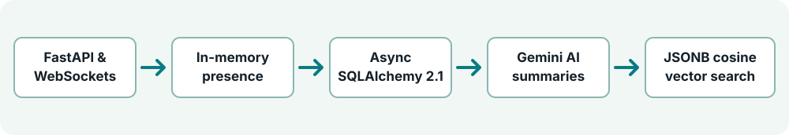

Pillar 1 · AI & Machine Learning Systems
ConnectHub — Real-Time AI Messaging Engine
An in-development multi-room messaging application with FastAPI, PostgreSQL, WebSockets, Gemini-assisted summaries, and room-scoped semantic search.
ASGI & Real-Time Pipeline
ConnectHub combines WebSocket connections, asynchronous relational persistence, AI summaries, and room-scoped semantic search in a modular application:

- 1. FastAPI ASGI & PostgreSQLUses FastAPI, Uvicorn, async SQLAlchemy sessions, Psycopg, and Alembic migrations. PostgreSQL stores the authoritative room and message records.
- 2. WebSockets & Ephemeral In-Memory PresenceFeatures a dedicated
/ws/{room_id}connection manager maintaining active client socket sets per chat room. Dispatches real-time broadcast events, ephemeral typing indicators, read receipts, and member join/leave notifications with low-latency local socket dispatch. - 3. Relational Schema & Cascade IntegrityNormalized relational schema modeling Users, Rooms, Memberships, Messages, and AI Summaries. Enforces foreign-key cascade deletes, compound uniqueness constraints, and B-tree compound indexing on
(room_id, created_at)for optimized paginated history traversal. - 4. Gemini Room SummariesA request route gathers room history and calls Gemini to generate a catch-up summary. Embedding generation uses a background task; summary generation is not a separate durable worker.
- 5. Room-Scoped Cosine SearchStores embedding arrays in PostgreSQL JSONB and compares them in Python within a room. No pgvector index or measured search latency is claimed.
Architectural Trade-offs & Deep Engineering Decisions
Single-Process In-Memory Presence
Current design: Active sockets and presence are tracked in process memory. This supports the current single-process prototype.
Limit: A multi-worker deployment would require shared coordination and a separate design and test pass. No Redis adapter is implemented.
JSONB Storage and Python Cosine Search
Current design: Embedding arrays are stored in PostgreSQL JSONB and compared in Python for room-scoped search.
Limit: Search scale and latency have not been independently benchmarked. The implementation does not use pgvector or HNSW.
Async Database Sessions
Uses SQLAlchemy AsyncSession for database operations. The project still requires load and failure testing before any concurrency or throughput claim.
Verification, Test Harness & Code Quality
The system is verified by a multi-tiered automated test suite: 97 backend unit and integration tests (FastAPI / pytest), 21 frontend component tests (React / Vitest), and 3 Playwright end-to-end integration scenarios covering real-time messaging, WebSocket room lifecycles, and database persistence. Test areas include:
- Authentication & Permissions: JWT creation, password hashing with bcrypt, token revocation, and role-based room access enforcement (Owner vs Member).
- Message Dispatch & Pagination: Validated message sequencing, database persistence, cursor-based pagination, and foreign-key integrity.
- WebSocket Lifecycle: Connection handshake, room authorization, broadcast delivery, and clean disconnect state cleanup.
- AI Error Handling: Mocked summary-service failures, token quota exhaustion, and room-scoped semantic search.